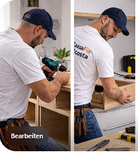
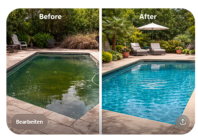

Ihr Auge vor Ort im Raum Alicante
Premium Property Care für internationale und lokale Eigentümer, die ihre Immobilie an der Costa Blanca zuverlässig überwacht, betreut und vor Ort vertreten wissen wollen. Ich kontrolliere, koordiniere, dokumentiere und übernehme zusätzlich kleinere praktische Arbeiten selbst.
Bereits jetzt beantworte ich gerne Anfragen, plane Projekte und bereite laufende Betreuung im Voraus vor.
Your eyes on site in the Alicante area
Premium property care for international and local owners who want their property on the Costa Blanca to be reliably monitored, cared for and represented locally. I inspect, coordinate, document and also handle smaller practical tasks myself.
I am already happy to answer inquiries, plan projects and prepare ongoing property care in advance.
Sus ojos sobre el terreno en la zona de Alicante
Servicio premium de cuidado de propiedades para propietarios internacionales y locales que quieren su inmueble en la Costa Blanca controlado, cuidado y representado localmente. Inspecciono, coordino, documento y también realizo pequeños trabajos prácticos personalmente.
Ya respondo consultas, planifico proyectos y preparo servicios de supervisión con antelación.
Alleinstellungsmerkmal
Ich bin nicht einfach nur ein Handwerker und nicht einfach nur eine Hausverwaltung. Ich bin der persönliche Ansprechpartner vor Ort, der als Vertrauensperson für den Eigentümer regelmäßig präsent ist, Risiken früh erkennt und den Wert der Immobilie durch Kontrolle, Dokumentation und pragmatische Lösungen schützt.
Unique value proposition
I am not just a handyman and not just property administration. I am the personal local contact who acts as a trusted representative for the owner, is regularly present on site, identifies risks early and protects the value of the property through inspection, documentation and practical solutions.
Propuesta de valor
No soy solo un manitas ni solo una administración de fincas. Soy la persona de contacto local de confianza para el propietario, con presencia regular sobre el terreno, detección temprana de riesgos y protección del valor del inmueble mediante control, documentación y soluciones prácticas.
Kernleistungen
Die Hauptleistung ist Betreuung und Überwachung. Kleinere Arbeiten & Instandhaltung ergänzen den Service. Keine Großbaustellen.
Core services
The main service is care and supervision. Smaller jobs and upkeep are an addition, not the main focus. No large construction projects.
Servicios principales
El servicio principal es el cuidado y la supervisión. Los pequeños trabajos y el mantenimiento son un complemento, no el enfoque principal. No grandes obras.
Gebäudeüberwachung
Property monitoring
Supervisión del inmueble
- Regelmäßige Kontrollgänge
- Briefkasten, Sichtkontrolle und Präsenz
- Früherkennung von Risiken und Schäden
- Regular inspection visits
- Mailbox, visual checks and visible presence
- Early detection of risks and damage
- Visitas periódicas de control
- Buzón, revisión visual y presencia
- Detección temprana de riesgos y daños
Unwetter-Check
Storm damage check
Control tras temporales
- Schnelle Begehung nach Starkregen oder Sturm
- Schadensaufnahme und Rückmeldung
- Dokumentation für Eigentümer
- Quick visit after heavy rain or storms
- Damage inspection and feedback
- Documentation for the owner
- Visita rápida tras lluvias fuertes o tormentas
- Revisión de daños y respuesta
- Documentación para el propietario
Bauüberwachung
Renovation supervision
Supervisión de reformas
- Kontrolle und Dokumentation von Arbeiten vor Ort
- Ansprechpartner für Eigentümer und Gewerke
- Klare Rückmeldung über Fortschritt und Zustand
- On-site control and documentation of works
- Contact point for owners and trades
- Clear feedback on progress and condition
- Control y documentación de trabajos sobre el terreno
- Persona de contacto para propietarios y gremios
- Información clara sobre avance y estado
Kleinere Arbeiten & Instandhaltung
Small jobs & upkeep
Pequeños trabajos y mantenimiento
- Kleinreparaturen und kleinere Montagearbeiten
- Möbel, Garten und Objektpflege im kleinen Rahmen
- Direkte Hilfe ohne unnötige Umwege
- Small repairs and minor installation work
- Furniture, garden and small-scale property care
- Direct help without unnecessary delays
- Pequeñas reparaciones y trabajos de montaje
- Muebles, jardín y cuidado del inmueble a pequeña escala
- Ayuda directa sin rodeos innecesarios
Warum Eigentümer mir vertrauen können
Gerade bei Haus- und Wohnungsbetreuung zählen nicht große Worte, sondern Verlässlichkeit, Diskretion und Organisation.
Why property owners can trust me
When it comes to looking after homes and apartments, reliability, discretion and organisation matter more than big promises.
Por qué los propietarios pueden confiar en mí
En el cuidado de casas y apartamentos cuentan más la fiabilidad, la discreción y la organización que las grandes promesas.
Auf Baustellen groß geworden und gelernter Bau- und Möbelschreiner
Grew up around construction sites and trained as a carpenter and cabinet maker
Crecí en obras y me formé como carpintero de obra y de muebles
8 Jahre diplomatischer Dienst – geprägt von Zuverlässigkeit und Diskretion
8 years in diplomatic service – shaped by reliability and discretion
8 años en servicio diplomático – marcados por fiabilidad y discreción
Geprüfter Logistikmeister (IHK) mit ausgeprägten Planungs- und Koordinationsfähigkeiten
Trained logistics manager with strong planning and coordination skills (Bachelor Professional of Logistics, CCI)
Maestro logístico certificado con sólidas capacidades de planificación y coordinación
Persönliche Verantwortung und direkte Betreuung statt anonymer Abwicklung
Personal responsibility and direct support instead of anonymous handling
Responsabilidad personal y atención directa en lugar de gestión anónima
So funktioniert es
Einfacher Kontakt, klare Rückmeldung, strukturierte Umsetzung.
How it works
Simple contact, clear feedback and structured support.
Cómo funciona
Contacto sencillo, respuesta clara y ejecución organizada.
Anfrage senden
Send your request
Envíe su solicitud
Schicken Sie Ihr Anliegen einfach per WhatsApp – gerne mit Foto oder kurzer Beschreibung.
Send your request via WhatsApp, ideally with a photo or short description.
Envíe su solicitud por WhatsApp, idealmente con una foto o una breve descripción.
Rückmeldung erhalten
Get a response
Reciba respuesta
Sie erhalten eine Einschätzung, Rückmeldung und wenn sinnvoll bereits eine erste Planung.
You receive an assessment, feedback and, if useful, an initial plan.
Recibirá una valoración, respuesta y, si procede, una primera planificación.
Termin oder Betreuung abstimmen
Arrange a visit or support
Coordinar visita o apoyo
Wir stimmen ab, was konkret gebraucht wird – Betreuung, Überwachung oder kleinere Arbeiten.
We agree on what is needed – care visits, supervision or smaller jobs.
Acordamos lo que se necesita: visitas, supervisión o pequeños trabajos.
Zuverlässige Umsetzung
Reliable execution
Ejecución fiable
Klare Kommunikation, verlässliche Durchführung und ein Ansprechpartner, der mitdenkt.
Clear communication, reliable execution and one local contact who thinks ahead.
Comunicación clara, ejecución fiable y una persona de contacto que piensa con antelación.
Fotos & Einblicke
Ein erster Eindruck von Betreuung, Arbeit vor Ort und sichtbaren Ergebnissen.
Photos & impressions
A first impression of local property care, practical work and visible results.
Fotos e impresiones
Una primera impresión del cuidado local, el trabajo práctico y los resultados visibles.



Über mich
Ich bin auf Baustellen groß geworden, gelernter Bau- und Möbelschreiner und arbeite seit Jahren im praktischen Bereich rund ums Haus. Gleichzeitig bringe ich strukturierte Planung, Koordination und Verantwortungsbewusstsein mit – genau die Kombination, die Eigentümer vor Ort brauchen.
About me
I grew up around construction sites, trained as a carpenter and cabinet maker and have worked for years in practical property-related work. At the same time, I bring structured planning, coordination and a strong sense of responsibility – exactly the combination property owners need on site.
Sobre mí
He crecido en obras, me formé como carpintero de obra y de muebles y llevo años trabajando de forma práctica en todo lo relacionado con inmuebles. Al mismo tiempo, aporto planificación estructurada, coordinación y sentido de responsabilidad: justo la combinación que necesitan muchos propietarios sobre el terreno.
Kontakt
Contact
Contacto
Impressum & Datenschutz
Vollständige Kontaktdaten und rechtliche Angaben werden vor dem offiziellen Start ergänzt.
Impressum
Name: Marco Weiss
Unternehmen: CasaFix Costa
Adresse: [Straße, Hausnummer, Postleitzahl, Ort ergänzen]
E-Mail: [E-Mail ergänzen]
Telefon: +49 152 53692878
Verantwortlich für den Inhalt: Marco Weiss
Datenschutz
Beim Besuch dieser Website werden technisch notwendige Daten durch den Hosting-Anbieter verarbeitet. Wenn Sie über WhatsApp Kontakt aufnehmen, werden die von Ihnen übermittelten Daten zur Bearbeitung Ihrer Anfrage verwendet.
Diese Website verwendet aktuell kein Kontaktformular und keine Analyse-Tools. Bei einer Kontaktaufnahme über WhatsApp gelten zusätzlich die Datenschutzbestimmungen von WhatsApp.
Verantwortlich für die Datenverarbeitung im Rahmen dieser Website ist Marco Weiss. Eine Kontaktaufnahme ist über die oben genannten Kontaktdaten möglich.